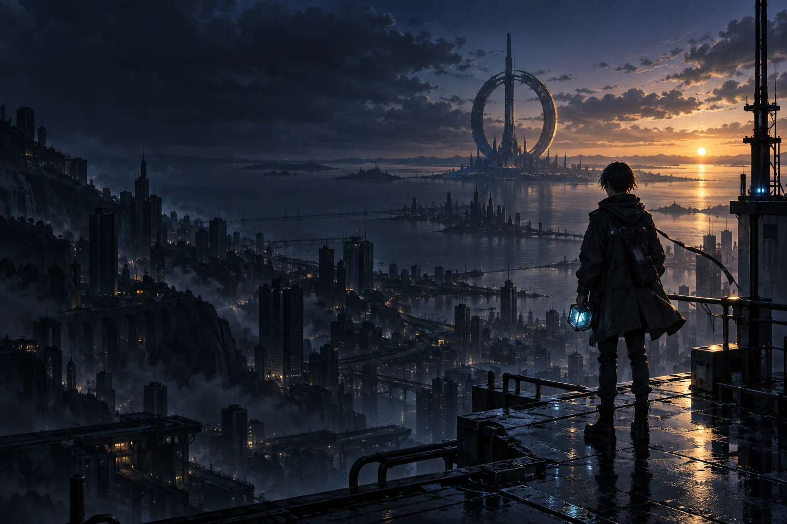

P.H.A.S.E ORIGINAL
A SIGNAL WORTH SAVING
잔광마지막 신호
A F T E R L I G H T
도시가 잠든 밤.
아직, 너에게 닿지 못한 빛이 있다.
빛으로 풀어내는 4막 · 16개의 신호터치 / 마우스 / 키보드
00 조작
LIVE OPTICAL LINK
신호 준비 완료
ALL SIGNALS RECEIVED
우리가 연결한
새벽.
빛이 도시를 밝힌 건 아니었다.
빛이 전한 명령을 받고, 사람들이 비상 전력망을 다시 켰다.
미라의 첫 메시지가 도착했다.
“여기 있어 줘서 고마워.”
노아가 대답했다.
“이제, 혼자 지키지 않을게.”
다른 길을 지나도, 우리는 같은 새벽에 닿는다.